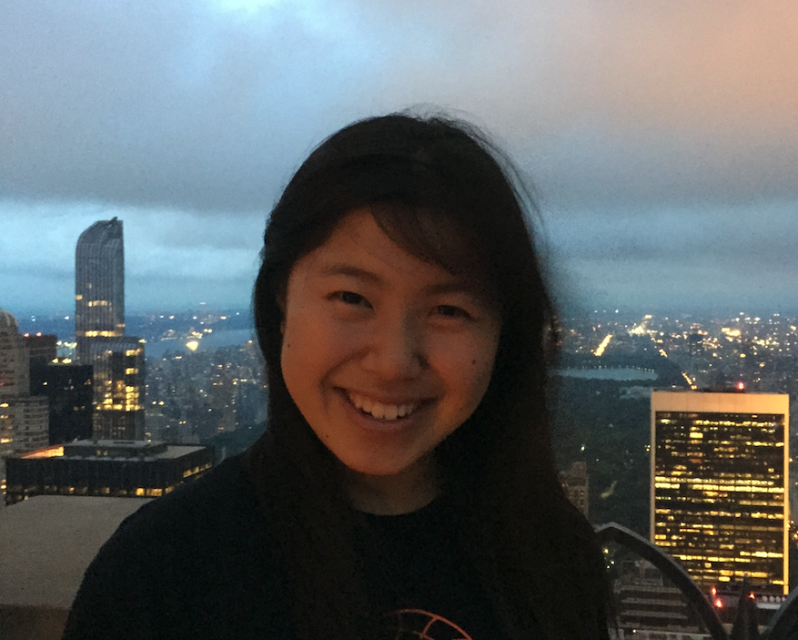

< return to staff Education
|
 |
| Biography | |
|
Yanbing is a PhD student in the Applied Physics
department. Her current project involves examining the
properties of chiral low-dimensional materials.
She previously interned at Google on the GeoData team and at
NASA’s Jet Propulsion Lab, where she worked on data
visualization for OCO-2, a carbon dioxide monitoring
satellite. She received her BS in Physics (CS minor) from
Caltech in 2017. As an undergrad, she worked on a
nanofabrication patterning technique inspired by the Marangoni
effect (the ‘tears” in a glass of wine phenomena).
Yanbing grew up in Cupertino, CA and is glad to back in the Bay
Area. She equally enjoys spending time outside and picking up a
good book.
| |